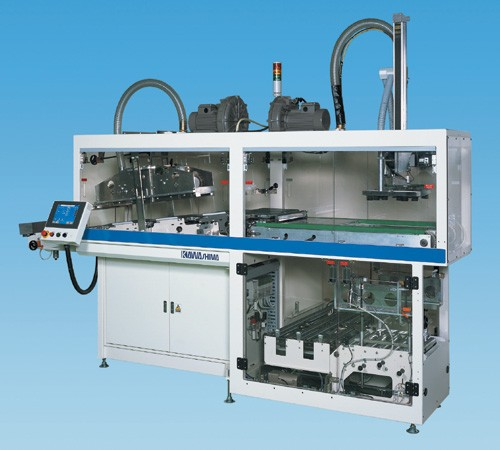

KBC-900型 ダンボールケーサ

操作
■
10インチ液晶カラータッチパネルを搭載
・イラスト入りで見やす簡単に操作ができ、警報内容や対処方法などがひと目で解ります。
特徴
・設置面積を最小限に抑える省スペース化を実現。
・生産スペースに合わせたフレキシブルな製函機の配置が可能。
・対話式操作なので、だれでも簡単にサイズチェンジが可能。
・操作やメンテナンス性を重視した解りやすいシンプル設計。
詰め方
■
様々な箱詰めパターンに対応
列数や段数は詰め数に合わせて自由に変更可能。
1台で多様な商品の箱詰めがフレキシブルに対応できます。
HOMEへ戻る
Copyright (C) KAWASHIMA PACKAGING MACHINERY CO.,LTD. All Rights Reserved.